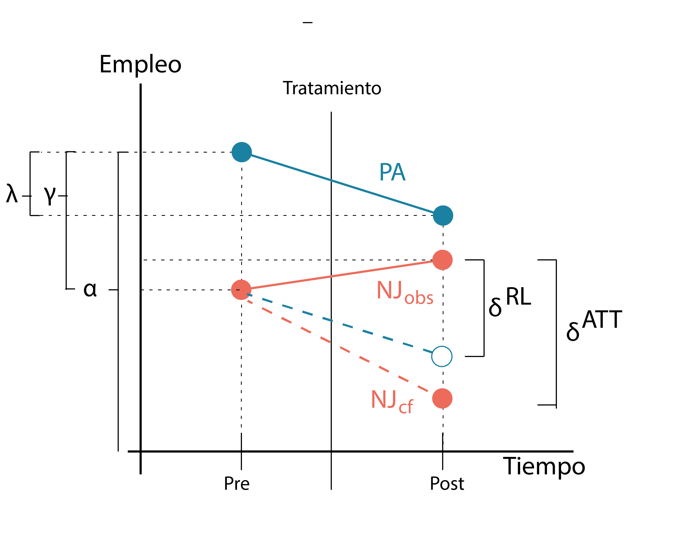
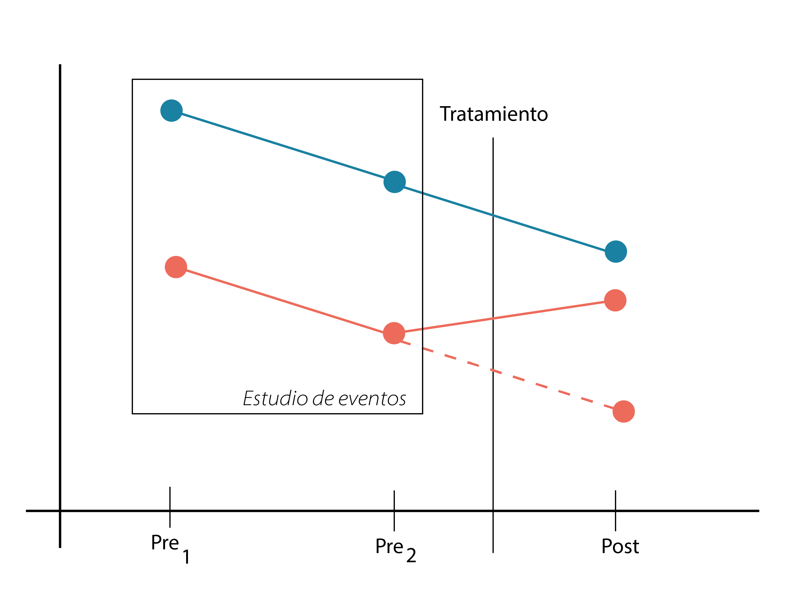

7 Diferencias en diferencias
En esta seccion vamos a hablar de uno de los diseños quasiexperimentales más populares. Este tipo de diseño, si bien ha sido definido formalmente en tiempos mas modernos, ha existido en formas rudimentaria como una aproximacion intuitiva en las investigaciones observacionales que se han hecho en los ultimos 300 años.
Debido a su caracter tan intuitivo vamos a tratar de arrimarnos a su concepcion a través de un enfoque historico.
7.1 Barcos, naranjas y chocolates 🍊
Entre los siglos XVI y XVII, la humanidad vivió una transformación social sin precedentes. Tras la era de los grandes navegantes, la sociedad occidental se expandió por todo el globo, estableciendo rutas comerciales que circunnavegaban la Tierra con frecuencia, sin necesidad de tocar puerto. Estas rutas conectaban Europa con la India, China y América en un flujo constante de tráfico marítimo, aunque cada viaje podía durar varios meses.
Con esta expansión surgió también una enfermedad devastadora: la llamada “melancolía del mar”. Una proporción significativa de marineros, especialmente en los viajes más largos, comenzaba a experimentar una fatiga creciente, aparición de manchas ásperas en la piel, úlceras en las encías, pérdida de dientes e incluso la muerte, que podía ocurrir pocas semanas después de los primeros síntomas. Esta enfermedad pasó a conocerse como escorbuto, nombre derivado de una palabra escandinava que hacía referencia a las úlceras en el paladar.
El escorbuto se convirtió en un problema grave de salud, y también económico: en cada travesía hacia la India, por ejemplo, hasta un 10 % de la tripulación podía morir o quedar gravemente afectada por la enfermedad.
Dispuesto a resolver el problema el Dr James Lind (sin t al final que esos son los chocolates, y esa es la unica mencion a los chocolates) en 1747 se dio cuenta que todos los que opinaban sobre la enfermedad nunca se habian subido a un barco, decidido que la unica alternativa era la observacion del fenomeno se subio a un barco de Liverpool a la India, se agarro escorbuto y llego a la idea de que toda la tripulacion tenia mayor o menormente los sintomas, pero algunos marineros parecian estar significativamente mejor, eran los que habian traido desde sus casas alguna conservas o licores caseros (fundamentalmente de frutas).
Con esta observación, Lind propuso un diseño cuasi-experimental para investigar el escorbuto. Aunque los datos originales se han perdido con el tiempo, podemos imaginar cómo pudo haber sido el experimento. Lind planteó comparar dos barcos —el Marigold y el Endeavour— que zarparían desde Liverpool rumbo a la India, llevando productos textiles y regresando con materias primas. La diferencia clave: durante el viaje de regreso, solo la tripulación del Marigold recibiría una naranja diaria. En cada uno de los cuatro viajes, se registrarían los casos de escorbuto, resultando en una tabla como la siguiente:
| Barco | Casos (Liverpool–India) | Marineros (Liverpool–India) | Casos (India–Liverpool) | Marineros (India–Liverpool) |
|---|---|---|---|---|
| Marigold | 72 | 180 | 18 | 200 |
| Endeavour | 60 | 180 | 50 | 150 |
Spoiler alert Lind descubrio que el escorbuto se debía a un factor nutricional desconocido presente en frutas y vegetales frescos y en sus derivados. Más tarde sabriamos que es la vitamina C.
7.2 De las naranjas a las diferencias en diferencias
Lind parece tener todo listo para demostrar el efecto de su tratamiento: las naranjas. La primera tentación sería comparar directamente los casos de escorbuto en el viaje de regreso, de India a Liverpool, entre los dos barcos: el Marigold (grupo tratado) y el Endeavour (grupo control). La otra posibilidad sería comparar los casos del Marigold al ir a la India (control), y al volver con naranjas (tratamiento). Vamos a analizar cada enfoque
7.2.1 Enfoque 1: Comparar post-intervención entre grupos
Este enfoque suena sencillo y, además, bastante lógico: hay un tratamiento claro (las naranjas) y un grupo que no lo recibió. La comparación directa entre los casos de escorbuto en el viaje de regreso (India–Liverpool) entre el Marigold (grupo tratado) y el Endeavour (grupo control) parece una forma intuitiva de evaluar el efecto.
Pero si venís siguiendo este libro con atención, probablemente ya se te prendieron algunas alarmas. Y si no lo hiciste todavía, dejame señalar una advertencia clave —que vale la pena destacar:
⚠️ La utilización del SDO (Simple Difference of Outcomes) como estimador del ATE (Average Treatment Effect) solo es válida si la asignación a los grupos fue aleatoria.
En este caso, formar parte de la tripulación del Marigold o del Endeavour no fue una decisión aleatoria. Y eso es un problema. Hay muchas razones —algunas conocidas, otras ocultas— por las que los marineros de un barco podrían diferir sistemáticamente de los del otro. Por ejemplo, quizás un capitán recluta tripulación en una región donde los marineros suelen llevar licores o frutas fermentadas que podrían, sin quererlo, ofrecer protección contra el escorbuto. El otro capitán no.
Eso significa que pertenecer a uno u otro barco no solo influye en la probabilidad de recibir el tratamiento (las naranjas), sino que también puede afectar directamente el resultado (los casos de escorbuto). En otras palabras: hay un efecto fijo ligado a cada barco que no estamos controlando, y eso debilita el valor contrafactual de la comparación entre grupos.
Para entender mejor este problema, tratemos de formalizarlo un poco.
Supongamos que cada barco tiene un efecto propio, constante, sobre el número de casos de escorbuto. Es decir, más allá del tratamiento, hay algo estructural —el barco en sí— que influye en los resultados: el liderazgo del capitán, la experiencia de los marineros, las condiciones sanitarias a bordo, etc.
Estos efectos fijos actúan como una especie de “firma” del barco sobre el resultado. Por eso, aunque a uno le demos naranjas y al otro no, no podemos estar completamente seguros de que las diferencias en los casos se deban al tratamiento.
Para ordenar las ideas, usemos un poco de notación:
- Y: número de casos de escorbuto
- D: tratamiento (naranjas: sí o no)
- M y E: efectos fijos del Marigold y Endeavour, respectivamente
Entonces podemos representar los casos de escorbuto así:
| Barco | Casos (Viaje de regreso) |
|---|---|
| Marigold | Y = D + M |
| Endeavour | Y = E |
En este modelo, si simplemente restamos los casos entre grupos post-tratamiento (como haríamos con un SDO), obtenemos:
$ Y_{} - Y_{} = D + (M - E) $
Aquí aparece un problema clave: el término ( M - E ) representa una diferencia estructural entre barcos —y puede interpretarse como un sesgo de selección.
7.2.2 Enfoque 2: Comparar el barco pre y post-intervención
En el enfoque anterior vimos que no podemos simplemente comparar dos unidades diferentes (como barcos) porque existe el riesgo de sesgo de selección. Pero, entonces, ¿podemos comparar una unidad consigo misma antes y después del tratamiento?
Esta idea es intuitiva y tiene nombre: se trata de una serie de tiempo interrumpida. En este caso, compararíamos al Marigold antes y después de recibir naranjas. Veamos una tabla simplificada:
| Barco | Viaje (t) | Casos |
|---|---|---|
| Marigold | Ida (sin tratamiento) | Y = M |
| Marigold | Regreso (con tratamiento) | Y = M + (t + D) |
Este enfoque tiene una ventaja: al comparar la unidad consigo misma, el efecto fijo del barco queda eliminado. Ya no tenemos el problema de las diferencias estructurales entre barcos. Pero ahora aparece otro problema.
Aunque este procedimiento elimina con éxito el sesgo asociado a diferencias entre barcos, no nos da una estimación no sesgada del efecto del tratamiento. ¿Por qué? Porque el estimador basado en la Simple Difference of Outcomes (SDO) no puede corregir los cambios naturales a lo largo del tiempo.
En otras palabras, el número de casos puede cambiar simplemente porque el viaje de regreso fue diferente, porque hubo una nueva ola de escorbuto, o por cualquier otro factor relacionado con el tiempo. A esto lo representamos con el término ( t ) en la fórmula.
Entonces, aunque ya no estamos comparando peras con manzanas (barcos distintos), ahora estamos asumiendo erróneamente que el contexto temporal antes y después del tratamiento es equivalente, lo cual tampoco es cierto. Por eso, tampoco podemos confiar en esta comparación para estimar el efecto real del tratamiento.
7.2.3 Enfoque 3: Diferencia en diferencias (DiD)
Recién vimos que:
- Comparar un barco con otro introduce un sesgo de selección, porque no fueron asignados aleatoriamente.
- Comparar un barco consigo mismo antes y después elimina ese sesgo, pero introduce una variable confundidora no medida: el tiempo.
La intuición detrás de la estrategia de diferencia en diferencias (DiD) es sorprendentemente simple: combinar ambos enfoques básicos de forma que, por turnos, se eliminen tanto el sesgo de selección como el efecto del tiempo.
Veámoslo en la siguiente tabla:
| Barco | Viaje (t) | Tratamiento (N) | Casos |
|---|---|---|---|
| Marigold | Ida (pre) | No | Y = M |
| Marigold | Regreso (post) | Sí | Y = M + D + t |
| Endeavour | Ida (pre) | No | Y = E |
| Endeavour | Regreso (post) | No | Y = E + t |
La idea ahora es usar las diferencias de cada barco en el tiempo, y luego restar esas diferencias entre sí.
Vamos a ponerlo en una tabla para ver si es mas claro
| Barco | Viaje (t) | Tratamiento (N) | Casos | Diferencias pre-post | Diferencias de las diferencias |
|---|---|---|---|---|---|
| Marigold | Ida (pre) | No | Y = M | ||
| Marigold | Regreso (post) | Sí | Y = M + D + t | t+D | |
| Endeavour | Ida (pre) | No | Y = E | ||
| Endeavour | Regreso (post) | No | Y = E + t | t | D |
Es decir:
\[ \text{DiD} = \left( Y_{\text{Marigold}}^{\text{post}} - Y_{\text{Marigold}}^{\text{pre}} \right) - \left( Y_{\text{Endeavour}}^{\text{post}} - Y_{\text{Endeavour}}^{\text{pre}} \right) \]
Reemplazando con las expresiones de la tabla:
\[ \text{DiD} = \left( M + D + t - M \right) - \left( E + t - E \right) = D \]
¡Y ahí lo tenés! El efecto del tratamiento queda aislado: el efecto del barco se elimina porque comparamos cada barco consigo mismo, y el efecto del tiempo se elimina porque está presente en ambos barcos y se cancela en la resta.
El diseño de diferencia en diferencias (DiD) es una herramienta poderosa, pero no funciona por arte de magia. Para que nos dé una estimación válida del efecto del tratamiento, hay un supuesto fundamental que debemos aceptar —y que, de hecho, ya estaba implícito en la tabla que vimos más arriba.
¿Qué estamos asumiendo sin decirlo? Que no existen factores no observados que varíen en el tiempo y que sean específicos de cada unidad (en nuestro caso, cada barco). Es decir, que no hay nada especial que le pase solo al Marigold en el viaje de regreso, además del tratamiento, que esté afectando la cantidad de casos de escorbuto.
O, formulado de otra manera: estamos asumiendo que el cambio en el tiempo sería el mismo en ambos barcos si ninguno hubiese recibido tratamiento.
Este supuesto se conoce como el de tendencias paralelas (parallel trends assumption), y lo podemos expresar en notación así:
\[ \delta_t^{\text{Marigold}} = \delta_t^{\text{Endeavour}} \]
Este \(\delta_t\) representa el cambio natural que ocurre entre el viaje de ida y el de regreso (por ejemplo, por una ola de escorbuto que afecta a todos por igual). Si esa tendencia es paralela entre unidades tratadas y no tratadas, entonces podemos confiar en que la diferencia adicional observada en el Marigold se debe realmente al tratamiento —y no a algún otro cambio no observado.
Volveremos una y otra vez a este supuesto a lo largo del capítulo, porque es el corazón del motor que hace andar este diseño.
Cuando este supuesto se cumple, DiD nos permite identificar el efecto causal del tratamiento, incluso sin asignación aleatoria. Y lo hace de forma sorprendentemente simple: usando observaciones repetidas en unidades tratadas y no tratadas (como los viajes de ida y vuelta de ambos barcos), eliminamos tanto la heterogeneidad entre unidades como los cambios compartidos en el tiempo. Una vez definido el escenario básico nos vamos a poner a hablar formalmente de este tipo de diseño.
Es posible que llegado este punto esten preocupados por el escorbuto, no se preocupen la vitamina C que tienen los mates que tomaron leyendo esto es más que suficiente para evitarlo, pero por las dudas…vamos a seguir leyendo …

7.3 Definicion formal de Diferencias en diferencias
El caso que hemos presentado es el caso mas sencillo de diseño DD que se suele llamar DD2x2. Este diseño incluye un grupo tratado y un grupo no tratado. Hay un período previo para el grupo tratado (pre(k)), un período posterior para el grupo tratado (post(k)), un período previo para el grupo no tratado (pre(U)) y un período posterior para el grupo no tratado (post(U)). Entonces:
\[ \hat{\delta}^{\text{2x2}}_{\text{kU}} = (\bar{Y}_{k_\text{post}} - \bar{Y}_{k_\text{pre}}) - (\bar{Y}_{U_\text{post}} - \bar{Y}_{U_\text{pre}}) \]
donde:
- \(\hat{\delta}^{\text{2x2}}_{\text{kU}}\) es la estimación del efecto promedio del tratamiento en el grupo k (el ATT)
- \(\bar{Y}\) representa el promedio muestral de ese grupo particular en ese tiempo particular
El primer término, \(\bar{Y}_{k_\text{post}} - \bar{Y}_{k_\text{pre}}\) es la diferencia antes-después para el grupo tratado. El segundo término (\(\bar{Y}_{U_\text{post}} - \bar{Y}_{U_\text{pre}}\)) es la misma diferencia, pero para el grupo no tratado. Luego restamos la segunda diferencia de la primera.
Pero esto es simplemente la mecánica del cálculo. ¿A qué corresponde exactamente este parámetro estimado? Para entender eso, debemos convertir estos promedios muestrales en valores esperados condicionales de resultados potenciales. Por suerte, eso es fácil de hacer cuando trabajamos con promedios, como veremos ahora.
Primero, reescribamos la expresión como una esperanza condicional.
\[ \hat{\delta}^{\text{2x2}}_{\text{kU}} = (E[Y_k|Post] - E[Y_k|Pre]) - (E[Y_U|Post] - E[Y_U|Pre]) \]
Luego, usamos la ecuación de cambio (switching equation), que transforma observaciones históricas en resultados potenciales. Como ya hicimos antes, vamos a hacer un pequeño truco: sumar cero en el lado derecho para poder reorganizar los términos y destacar algo importante.
\[ \hat{\delta}^{\text{2x2}}_{\text{kU}} = \underbrace{(E[Y^1_k|post] -E[Y^0_k|pre])-(E[Y^0_U|post] -E[Y^0_U|pre])}_{\text{switching equation}} + \underbrace{(E[Y^0_k|post] -E[Y^0_k|ppost])}_{\text{suma cero}} \]
Al reorganizar estos términos, obtenemos la descomposición de la estimación DD en función de valores esperados condicionales de resultados potenciales:
\[ \hat{\delta}^{\text{2x2}}_{\text{kU}} = \underbrace{\left( E[Y^1_k \mid \text{post}] - E[Y^0_k \mid \text{post}] \right)}_{\text{ATT}} + \underbrace{\left[ \left( E[Y^0_k \mid \text{post}] - E[Y^0_k \mid \text{pre}] \right) - \left( E[Y^0_U \mid \text{post}] - E[Y^0_U \mid \text{pre}] \right) \right]}_{\text{Bias due to non-parallel trends in 2x2}} \]
Estudiemos ahora ese último término. Este diseño DD sencillo aisla el ATT (primer término) si y solo si el segundo término se anula. ¿Pero por qué se anularía ese segundo término? Se anula si la primera diferencia del grupo tratado (E[Y(0) | D=1, t=1] - E[Y(0) | D=1, t=0]) es igual a la segunda diferencia del grupo no tratado (E[Y(0) | D=0, t=1] - E[Y(0) | D=0, t=0]).
Pero fíjate en el término de la segunda línea. ¿Notas algo extraño? El objeto de interés es E[Y(0) | D=1, t=1], es decir, el resultado en el grupo tratado en el período posterior, pero en un mundo sin tratamiento. Según la switching equation, este resultado no es observable. Y como hemos repetido varias veces: los contrafactuales no se pueden observar.
Esta conclusión se conoce como el supuesto de tendencias paralelas (parallel trends assumption), y por definición, no es contrastable empíricamente, ya que no podemos observar ese valor esperado contrafactual.
Volveremos sobre este tema más adelante, pero por ahora, lo presentamos para que lo tengas presente.
7.4 El supuesto de las tendencias paralelas
Vamos a tratar de entender mejor el problema de las tendencias paralelas. Vamos para ello a utilizar el trabajo clasico de Card y Krueger (1994). Estos investigadores aprovechando que dos estados vecinos: New Jersey -NJ- que iba a fijar un cambio de su salario minimo y Pennsylvania -PA- que iba a mantenerlo tal cual, decidieron estudiar su impacto sobre el empleo. Evaluaron el numero de empleos antes y despues de la medida en ambos estados. Es decir un diseño 2x2DiD
es decir que podriamos el ATT de esta forma:
\[ \hat{\delta}^{\text{2x2}}_{\text{NJ,PA}} = \underbrace{\left( E[Y^1_\text{NJ} \mid \text{post}] - E[Y^0_\text{NJ} \mid \text{post}] \right)}_{\text{ATT}} + \underbrace{\left[ \left( E[Y^0_\text{NJ} \mid \text{post}] - E[Y^0_\text{NJ} \mid \text{pre}] \right) - \left( E[Y^0_\text{PA} \mid \text{post}] - E[Y^0_\text{PA} \mid \text{pre}] \right) \right]}_{\text{Bias due to non-parallel trends in 2x2}} \]
Usando la switching equation (asumiendo que el efecto y el tiempo son fijos), podriamos estimar el efecto del salario minimo en el empleo (\(Y\)) como una regresión lineal en donde:
\[ Y=\alpha+\gamma NJ_s+ \lambda D_t+\delta(NJxD)_\text{st}+ \epsilon \]
Vamos a explicar esta fórmula, aquí NJ es una variable dummy (1 si es NJ y 0 si es PA) y D es una dummy del tiempo (1 si es post y 0 si es pre). Entonces las medidas adoptarian la siguiente forma dependiendo si las dummies son 0 o no.
PA pre = \(\alpha\)
PA post = \(\alpha +\lambda\)
NJ pre = \(\alpha + \gamma\)
NJ post= $ + ++ $
Graficarlo visualmente sería algo así:

Si miramos cuidadosamente el parametro \(\delta\) podemos ver como no es otro más que el ATT ya que es la distancia entre el valor que adopta NJ en el post tratamiento (en la linea solida) con respecto al valor contrafactico que hubiera adoptado sin tratamiento (la linea punteada) ya que si volvemos a nuestra ecuacion esto sería asi:
$$
= E[Y^1_ ] - E[Y^0_]
$$ Donde el primer termino es observado (porque \(Y=Y^1\), es decir la medida post tratamiento de NJ que recibio el tratamiento) y el segundo termino no por la misma razon
Ahora viene lo importante, una regresión lineal escrita a partir del diseño 2x2DiD siempre estimará la línea punteada, incluso si la pendiente contrafactual hubiera sido otra. Esto ocurre porque la regresion lineal utiliza el cambio en el tiempo de Pensilvania para proyectar un punto a partir del valor previo al tratamiento de Nueva Jersey. Una vez que se ha llenado ese valor faltante, el estimador del parámetro es igual a la diferencia entre el valor observado tras el tratamiento y el valor proyectado, calculado según la pendiente de Pensilvania, sin importar si esa pendiente de Pensilvania era o no el referente correcto para medir la pendiente contrafactual de Nueva Jersey. En resumen, esta regresión siempre estima un tamaño de efecto usando la pendiente del grupo no tratado como contrafactual, sin importar si esa pendiente es realmente la adecuada.
Pero, si la pendiente de Pensilvania es igual a la pendiente contrafactual de Nueva Jersey: en ese caso, la pendiente de Pensilvania utilizada en la regresión estimará mecánicamente el ATT.
Ahora como venimos viendo, este analisis asume que la pendiente del contrafactico del grupo tratamiento es paralela a la pendiente del grupo control. Si esto no ocurriera exactamente así el escenario sería este.

En la figura vemos entonces que la regresión estimo un punto contrafactico basado en la pendiente de PA (el grupo control), que podemos ver en azul en ese caso lo cual un estima un parametro \(\hat{\delta}^\text{RL}\) que es distinto del verdadero efecto causal dado por el estimador del ATT (nuestro parametro \(\hat{\delta}^\text{ATT}\)) que es la distancia entre la observacion de NJ y el contractico real de NJ si no hubiera recibido el tratamiento.
Aquí vemos la importancia del supuesto de tendencias paralelas. La única situación en la que la estimación de la regresión es igual al ATT es cuando el contrafactual de Nueva Jersey coincide por casualidad con la línea punteada de la regresión, que es una línea paralela a la pendiente de Pensilvania. Y aquí es donde surge el escepticismo comprensible de muchos observadores: ¿por qué deberíamos basar la estimación en esta creencia en una coincidencia? Al fin y al cabo, estamos hablando de una tendencia contrafactual, y por lo tanto no observable, dado que nunca ocurrió. Tal vez el contrafactual habría seguido la línea de la regresión, o tal vez habría sido alguna otra línea desconocida. Podría haber sido cualquier cosa —simplemente no lo sabemos.
Por eso se puede decir que el supuesto de tendencias paralelas es, en realidad, simplemente otra forma de expresar el supuesto de exogeneidad estricta
Al decidir optar por un diseño DiD debemos asumir esta condición, porque no tenemos forma de deducir cuanto esta de lejos un contrafactual (el que determina la regresión) del contrafactico real. Basicamente porque ambos son conrafacticos y no medibles. Lo que decimos al apelar a las tendencias paralelas es que hemos encontrado un grupo de control que aproxima la trayectoria que habría seguido el grupo tratado, y que el tratamiento no es endógeno (es decir que el tratamiento no es producto de las condiciones internas del grupo). Si el tratamiento es endógeno, entonces las tendencias paralelas se violan siempre, porque en el contrafactual el grupo tratado habría divergido de todos modos, independientemente del tratamiento.
Como dijimos esta situacion es inmedible, es una asuncion, es decir necesita un salto de fe y creer que la pendiente del grupo control es igual (o muy aproximada) a la pendiente del grupo tratamiento si no hubiera recibido el tratamiento (el contrafactico real). Pero como todo salto de fe, bueno este puede tener un poco o nada de evidencia a su favor. Veamos como podemos abordar este problema
7.4.1 Evidencia a favor del supuesto de pendientes paralelas
Dada la importancia crítica del supuesto de tendencias paralelas para identificar efectos causales con el diseño de diferencias en diferencias (DiD), y dado que una de las observaciones necesarias para evaluar dicho supuesto no está disponible para el investigador, uno podría rendirse y tirar la toalla. Sin embargo hay un par de metodos para agregar evidencia razonable acerca del supuesto. Vamos a ver dos:
Estudio de eventos
Chequeo del balance pretratamiento entre grupos
7.4.1.1 Estudio de eventos previos
Volvamos a rescribirla formula de nuestro diseño
\[ \hat{\delta}^{\text{2x2}}_{\text{kU}} = \underbrace{\left( E[Y^1_k \mid \text{post}] - E[Y^0_k \mid \text{post}] \right)}_{\text{ATT}} + \underbrace{\left[ \left( E[Y^0_k \mid \text{post}] - E[Y^0_k \mid \text{pre}] \right) - \left( E[Y^0_U \mid \text{post}] - E[Y^0_U \mid \text{pre}] \right) \right]}_{\text{Bias due to non-parallel trends in 2x2}} \]
Nos interesa el primer término, el ATT, pero este se ve contaminado por sesgo de selección cuando el segundo término no es igual a cero. Como evaluar el segundo término requiere el contrafactual, $ E[Y0∣post,D=1]−E[Y0∣pre,D=1]E[Y0∣post,D=1]−E[Y0∣pre,D=1]$, no podemos hacerlo directamente. Lo que que si se puede hacer, en cambio, es comparar coeficientes placebo de DD en los períodos previos al tratamiento. Si los coeficientes DD en esos períodos pretratamiento son estadísticamente iguales a cero, entonces las diferencias en diferencias entre el grupo tratado y el de control siguieron una tendencia similar antes del tratamiento.

Y aquí aparece el arte retórico del diseño: si fueron similares antes, ¿por qué no habrían de continuar siéndolo después del tratamiento?
Pero esta retórica es una especie de prueba por afirmación. Que hayan sido similares antes no implica lógicamente que deban serlo después. Asumir que el futuro será como el pasado es una forma de la falacia del jugador conocida como la “posición inversa”. Que una moneda haya salido cara tres veces seguidas no significa que deba salir cara la cuarta vez, al menos no sin otros supuestos adicionales. De la misma forma, no estamos obligados a creer que las tendencias contrafactuales serían iguales tras el tratamiento solo porque lo fueron antes, salvo que hagamos más supuestos sobre el poder predictivo de las tendencias previas. Pero hacer tales supuestos es, nuevamente, hacer supuestos no comprobables, y así volvemos al punto de partida.
Un caso en el que las tendencias paralelas se violarían de forma evidente es cuando el tratamiento es endógeno. En ese escenario, la asignación al tratamiento dependería directamente de los resultados potenciales y, en ausencia del tratamiento, esos resultados habrían cambiado de todas formas. Tal endogeneidad tradicional requiere más que simples visualizaciones “perezosas” de las tendencias previas. Aunque la prueba de placebo es importante, técnicamente las similitudes pretratamiento no son necesarias ni suficientes para garantizar tendencias contrafactuales paralelas (Kahn-Lang y Lang 2019). El supuesto no se prueba tan fácilmente. Nunca se puede dejar de ser riguroso al intentar determinar si los grupos se seleccionaron endógenamente al tratamiento, si hay sesgos por variables omitidas, distintas fuentes de sesgo de selección o caminos de retroceso abiertos. Cuando el término de error estructural en un modelo de regresión dinámica no está correlacionado con la variable de tratamiento, se tiene exogeneidad estricta, y eso es lo que proporciona las tendencias paralelas y permite hacer afirmaciones significativas sobre las estimaciones.
7.4.1.2 Mostrar el balance pretratamiento de ambos grupos
Recien mencionamos que estudiar los eventos previos es una forma (indirecta) de juntar evidencia a favor de este supuesto de tendencias paralelas (para que el salto de fe no sea tan alto) El problema es que como analizamos eso?, bueno hay varios enfoques que podemos tomar, en conjunto se los suele llamar event study plots Una forma simple de conducir esto es graficar los datos pretratamiento (como en en la figura anterior), sin embargo esto requiere que tengamos mucha suerte y los datos se hayan tomado en forma fija en otros eventos. Estos datos que provienen de observaicones rara vez suelen comportarse asi
Un escenario mucho más común es la existencia de un timing diferencial, en el que los grupos de unidades adoptan el tratamiento en distintos momentos. Entonces el concepto de “pretratamiento” se vuelve complejo. En nuestro ejemplo para el caso, Nueva Jersey aumentó su salario mínimo en 1992 y Nueva York lo hizo en 1994, pero Pensilvania nunca aumentó su salario mínimo, el período previo al tratamiento se define para Nueva Jersey (1991) y para Nueva York (1993), pero no para Pensilvania. Entonces, ¿cómo probamos las diferencias previas al tratamiento en ese caso? La gente lo ha hecho de varias maneras.
Una posibilidad es graficar los datos brutos, año por año, y simplemente observar a ojo. Compararías el grupo tratado con el nunca tratado, por ejemplo, lo que podría requerir muchos gráficos y ser visualmente incómodo.La ventaja es que muestra de forma transparente los datos crudos sin ajustes. Sin trucos. Las desventajas son varias. Primero, puede ser engorroso cuando el número de grupos tratados es grande, volviéndolo prácticamente imposible. Segundo, puede que no sea visualmente atractivo. Y tercero, este enfoque asume necesariamente que el único grupo de control es el nunca tratado, lo que en realidad no es cierto. Cualquier DiD es una combinación de una comparación entre tratados y nunca tratados, tratados tempranos (a los que llamaremos leads) frente a tratados tardíos (a los que llamaremos lags) y tratados tardíos frente a tratados tempranos. Por lo tanto, mostrar solo la comparación con los nunca tratados es en realidad una presentación engañosa del mecanismo de identificación subyacente en un modelo de efectos fijos bidireccionales con timing diferencial.
La forma actual en que se evalúan las dinámicas previas al tratamiento entre un grupo tratado y uno de control con timing diferencial es estimar un modelo de regresión que incluya leads y lags del tratamiento. Un ejemplo de eso puede ser graficar los leads previos al tratamiento en lugar de graficar tratamiento y control y tras la estimacion graficar los intervalos de regresion en cada unidad de leads/lags. Los modelos como estos suelen seguir una forma asi:
\[ Y_{its} = \gamma_s + \lambda_t + \sum_{\tau=-q}^{-1} \gamma_{\tau} D_{s\tau} + \sum_{\tau=0}^{m} \delta_{\tau} D_{s\tau} + x_{ist} + \varepsilon_{ist} \] El tratamiento ocurre en el año 0. Se incluyen \(q\) leads o efectos anticipatorios, y \(m\) lags o efectos posteriores al tratamiento. Ete tipo de enfoques permite al al lector comprobar tanto el grado en que los efectos del tratamiento post-tratamiento fueron dinámicos, como si los dos grupos eran comparables en sus dinámicas del resultado antes del tratamiento.
7.5 La importancia delplacebo
Existen varias pruebas para evaluar la validez de una estrategia de difference-in-differences (DD). Ya he mencionado una: la comparabilidad entre los grupos de tratamiento y control en las dinámicas observables antes del tratamiento. Ahora hablaré de otras formas creíbles de evaluar si los efectos causales estimados son fiables, destacando el uso de falsificación mediante placebos.
La idea de la falsificación con placebos es sencilla. Supongamos que encuentras un efecto negativo del salario mínimo sobre el empleo de los trabajadores con salarios bajos. ¿Es verdadera la hipótesis si encontramos evidencia a favor? Quizás sí, quizás no. Lo que realmente podría ayudar sería tener en mente una hipótesis alternativa e intentar ponerla a prueba. Si no puedes rechazar la hipótesis nula en esa hipótesis alternativa, eso aporta credibilidad a tu análisis original. Por ejemplo, puede que estés captando algo espurio, como factores cíclicos u otros no observables que no se capturan fácilmente con efectos fijos de tiempo o de estado. Entonces, ¿qué puedes hacer?
Un candidato para la falsificación con placebo podría ser simplemente usar datos de un tipo alternativo de trabajador cuyos salarios no se vean afectados por el salario mínimo vinculante. Por ejemplo, los salarios mínimos afectan el empleo y las ganancias de los trabajadores con salarios bajos, ya que estos son los trabajadores contratados literalmente con base en el salario de mercado. Sin un serio equilibrio general de por medio, el salario mínimo no debería afectar el empleo de los trabajadores con salarios altos, porque el salario mínimo no es vinculante para ellos. Dado que los trabajadores de salarios altos y bajos suelen estar empleados en sectores muy distintos, es poco probable que sean sustitutos. Este razonamiento podría llevarnos a considerar que los trabajadores con salarios altos funcionen como un placebo.
Hay dos formas de incorporar esta idea en nuestro análisis. A muchos les gusta ser directos y simplemente ajustar el mismo diseño DD usando como variable de resultado el empleo de los trabajadores con salarios altos. Si el coeficiente del salario mínimo es cero cuando usamos el empleo de trabajadores con salarios altos como resultado, pero el coeficiente del salario mínimo para los trabajadores con salarios bajos es negativo, entonces habremos aportado una evidencia más sólida que complementa el análisis previo de los trabajadores con salarios bajos. Pero hay otro método que utiliza el placebo dentro del estado para la identificación, llamado difference-in-differences-in-differences (o “triple differences”), que no abordaremos aqui